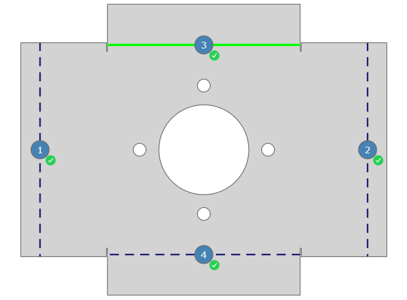

In this dialog you can set the bending sequence manually for a part. There are two ways of setting the bending sequence:
- Using the buttons at the bottom of the dialog.
- Tapping any bend line in the 2D view below the view window will set this bend line as the next bend in the bending sequence and will highlight it in green. The status of the active bend line is indicated by an icon in the table and in the 2D view.
Attention! Bend The bend is an element of the profile programming and designates a change in shape of the workpiece. A number of attributes can be assigned to a bend: side length, bend angle, bend radius (optional), initial-bend angle (optional), additional attributes (optional). A bend can consist of several bending processes. lines without a status icon cannot normally be added to the bending sequence without causing a collision.
The currently selected bend can be displayed in a 3D preview in the view window. To be able to preview the bend, the Before bending button must be disabled in the View bar.
Fig.: Before bending button disabled in the View bar

Setting the bending sequence in the 2D view
Clicking on a bend line will add it to the bending sequence. The bend lines are added to the sequence in the order in which you click on them.
Set bend lines are displayed gray. The position within the bending sequence is indicated on the bend line by numbers together with the appropriate status icon (See « Status»).
Fig.: Partially set bending sequence on a part

| Symbol | Description |
|---|---|

|
This button assigns the selected station to the bending sequence. |

|
This button deletes the assigned bending sequence from the bend line. |
| This button accepts a displayed collision on a bend line. This function is only enabled if the selected bending process will cause a collision with itself or a machine component. |
|

|
This button rotates the tool or bending part in its position. The change is shown in the 3D window. |

|
This button deletes all set bending sequences from the bending part. |
Displays the status of the bend line in the bending sequence.
| Symbol | Description |
|---|---|

|
The bending sequence for the bend line has not been defined yet and can be added to the bending sequence without causing a collision. |

|
A bending sequence has been assigned to the bend line. |

|
The bend can only be made with a collision. |

|
There is an error on the bend line. |

|
The bending sequence for the bending process has not been checked yet. Run the Check function. |

|
The bend with a collision has been accepted. |
Process
A serial number indicates the sequence of the bending processes.
Angle
Shows the angle of the bend. An angle of 0 is only used for the final bend in a hemming operation.
Bend type
Shows the type of bend in the bending process.
- Normal bending Normal bending is the standard method for creating a bend. Bending is defined by the bend angle and an optional initial-bend angle.
- Hemming This bend type bends the sheet over flat with a bend angle of 180°. The bending action is completed in two consecutive steps of «Pre-bend» and Hem. These steps may also be performed separately from one another.
- Pre-bending This bend type creates a bend in two steps. The bend is first made with an initial-bend angle and then the finished bend is made later with a final angle. Use pre-bending for complex bending parts to avoid collisions during the bending process.
- Auxiliary bend The auxiliary bend is temporarily inserted for certain bend shapes, and then bent back again, to allow the final shape of the bending part to be achieved.
- Stepped radius A stepped radius bend is made when the angle and radius of a bent side is achieved by making a number of individual bends. bend